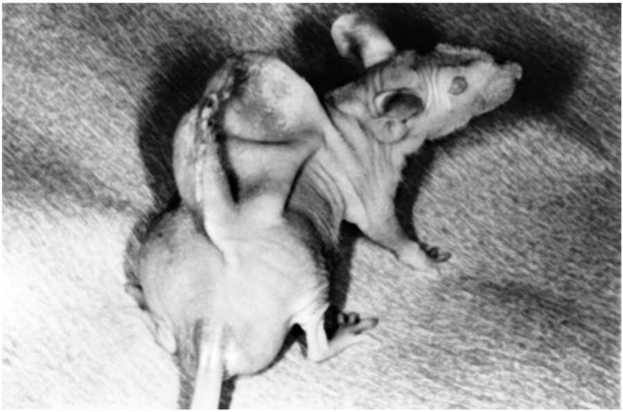

organisms. A simple example is castration. Humans have been castrating bulls for perhaps 10,000 years in order to create oxen. Oxen are less aggressive, and are thus easier to train to pull ploughs. Humans also castrated their own young males to create soprano singers with enchanting voices and eunuchs who could safely be entrusted with overseeing the sultans harem. But recent advances in our understanding of how organisms work, down to the cellular and nuclear levels, have opened up previously unimaginable possibilities. For instance, we can today not merely castrate a man, but also change his sex through surgical and hormonal treatments. But that’s not all. Consider the surprise, disgust and consternation that ensued when, in 1996, the following photograph appeared in newspapers and on television: 46. A mouse on whose back scientists grew an ‘ear’ made of cattle cartilage cells. It is an eerie echo of the lion-man statue from the Stadel Cave. Thirty thousand years ago, humans were already fantasising about combining different species. Today, they can actually produce such chimeras. No, Photoshop was not involved. It’s an untouched photo of a real mouse on whose back scientists implanted cattle cartilage cells. The scientists were able to control the growth of the new tissue, shaping it in
